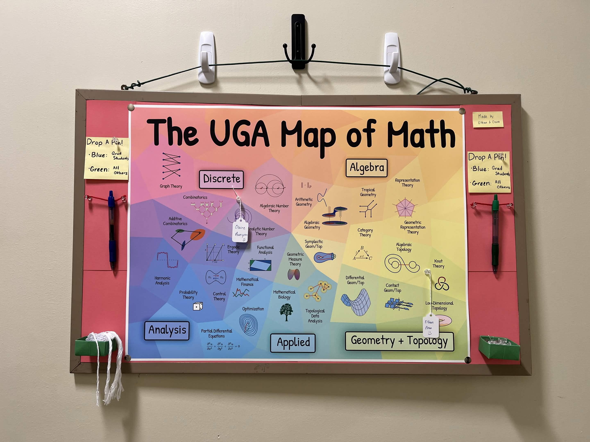
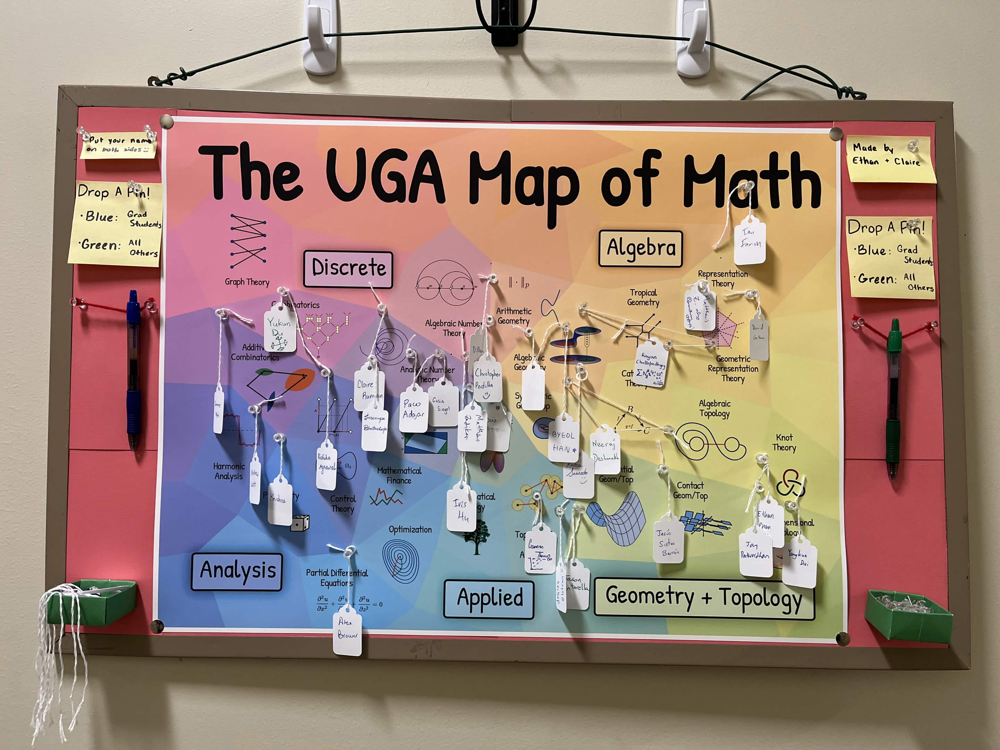

The UGA Map of Math
Written March 19, 2026When I went on my 50-mile walk during the summer of 2025, I walked to Emory, specifically their math department. Inside, I saw that they had printed out The Map of Mathematics and had pins/tags for grad students and professors to "pin" what area of math they worked in. I was a huge fan of the concept, and this idea was kept in the back of my head.
Ten months later, my Spring Break is approaching, and I pitch this idea to the other math grad students. We collectively agree that the idea is good, but the map is lacking: it's very much not representative of math research (why is Calculus and Trigonometry bigger than Topology?) nor the research the people at UGA do (e.g. there is no Algebraic Geometry). I also found some other maps, but none looked pretty enough to print. So I decided to make my own map over my Spring Break!

This was created using Inkscape. If you want to play around with the map, here is the svg file. I drew around half of the images and the rest are taken from Wikipedia. To be clear, this is only a map of math that people at UGA research.
I asked my friend Connor to print out the poster for me (thanks Georgia Tech for printing funds 😊), then with the help of another grad student Claire, we put up the poster on a corkboard.

After a couple of days the map was already starting to get full. It was really fun to watch people put up their pins!

As of 3/19/2026